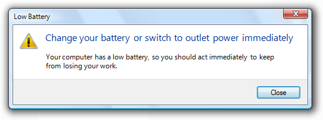
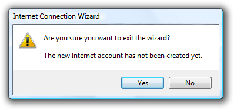
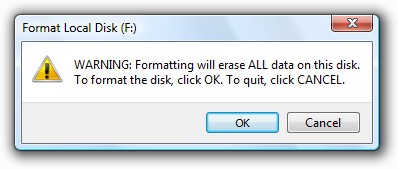

[!NOTE] This design guide was created for Windows 7 and has not been updated for newer versions of Windows. Much of the guidance still applies in principle, but the presentation and examples do not reflect our current design guidance.
A warning message is a modal dialog box, in-place message, notification, or balloon that alerts the user of a condition that might cause a problem in the future.

A typical modal warning message.
The fundamental characteristic of warnings is that they involve the risk of losing one or more of the following:
By contrast, a confirmation is a modal dialog box that asks if the user wants to proceed with an action. Some types of warnings are presented as confirmations, and if so, the confirmation guidelines also apply.
Note: Guidelines related to dialog boxes, confirmations, error messagesstandard icons, notifications, and layout are presented in separate articles.
To decide, consider these questions:
We overwarn in Microsoft Windows programs. The typical Windows program has warnings seemingly everywhere, warning about things that have little significance. In some programs, nearly every question is presented as a warning. Overwarning makes using a program feel like a hazardous activity, and it detracts from truly significant issues.
Incorrect:
Overwarning makes your program feel hazardous and look like it was designed by lawyers.
The mere potential for data loss or a future problem alone is insufficient to call for a warning. Additionally, any undesirable results should be unexpected or unintended, and not easily corrected. Otherwise, just about any user mistake could be construed to result in data loss or a potential problem of some kind and merit a warning.
Good warnings:
Incorrect:

So what? This confirmation assumes that users often exit programs by accident.
Incorrect:
In this case, it's better just to warn the user in three hours.
Incorrect:

Why is this notification a warning? What are users supposed to do (beside worry)?
Incorrect:

Canceling an incomplete wizard means the task doesn't get done...who knew?
Incorrect:

Users are more likely to focus on getting rid of the warning than fixing the underlying problem.
A message that doesn't have these characteristics might still be a good message, just not a good warning.
Some issues can be presented as an error, warning, or information, depending on the emphasis and phrasing. For example, suppose a Web page cannot load an unsigned ActiveX control based on the current Windows Internet Explorer configuration:
To determine the appropriate message type, focus on the most important aspect of the issue that users need to know or act upon. Typically, if an issue blocks the user from proceeding, you should present it as an error; if the user can proceed, present it as a warning. Craft the main instruction or other corresponding text based on that focus, then choose an icon (standard or otherwise) that matches the text. The main instruction text and icons should always match.
Warnings are more compelling when the following information is specific and clear:
Incorrect:

In this example, what is the potential problem? What is the user supposed to do, aside from not using the projector over the network? Without more specific information, all the user can do is feel bad about proceeding.
Correct:
In this example, the problem and consequences are clear.
Sometimes there is a legitimate potential problem worthy of informing users about, but the solution and consequences aren't known for sure. Rather than give a vague warning, be specific by giving the most likely information or the most common example.
Correct:
In this example, the warning is made specific by providing the most likely solution.
However, in such cases, use wording that indicates that there are other possibilities. Otherwise, users might be misled.
Incorrect:
Correct:
In the incorrect example, users will be confused if the cable is clearly plugged in.
If you do only two things...
Don't overwarn. Limit warnings to conditions that involve risk and are immediately relevant, actionable, not obvious, and infrequent. Otherwise, remove or rephrase the message.
Provide specific, useful information.
Warnings have several usage patterns:
| Label | Value |
|---|---|
| Awareness Make user aware of a condition or potential problem, but user may not have to do anything now. | Examples of awareness warnings. Awareness warnings have the following presentation: Main instruction: Describe the condition or potential problem.Supplemental instruction: Explain the implication and why it is important.Commit buttons: Close. |
| Error prevention Make user aware of information that might prevent a problem, especially when making choices. | Error prevention warnings are best presented using an in-place warning icon and explanatory text. Examples of error prevention warnings. |
| Imminent problem The user needs to do something now to prevent an imminent problem. | An example of an imminent problem warning. Imminent problem warnings have the following presentation: Main instruction: Describe what the user needs to do now.Supplemental instruction: Explain the condition and why it is important.Commit buttons: A command button or command link for each option, or OK if the action occurs outside the dialog box. |
| Risky action confirmation Confirm that the user wants to proceed with an action that has some risk and can't be easily undone. | An example of risky action confirmation. Risky action confirmations have the following presentation: Main instruction: Ask a question to determine if the user wants to proceed.Supplemental instruction: Explain any non-obvious reasons why the user might not want to proceed.Commit buttons: Yes, No.For guidelines on this pattern, see Confirmations. |
| User interface | Best used for |
|---|---|
| Modal dialog boxes | Critical warnings (including confirmations) that users must respond to now. |
| In-place | Information that might prevent a problem, especially when users are making choices. |
| Banners | Information that might prevent a problem, especially when related to completing a task. |
| Notifications | Significant events or status that can be safely ignored, at least temporarily. |
| Balloons | A control is in a state that affects input. This state is likely unintended and the user may not realize input is affected. |
Don't place a warning icon in the title bar of a dialog box.
Use a warning icon. Exceptions:
If the warning is for a feature that has an icon, you can use the feature icon with a warning overlay.
Correct:

In this example, the feature icon has a warning overlay.
For modal dialog boxes with a warning footnote, put the warning icon in the footnote instead of the content area.
Correct:
In this example, the footnote has the warning icon.
For more guidelines and examples, see Standard Icons.
For more guidelines, see Dialog Boxes.
For labeling guidelines, see Progressive Disclosure.
Incorrect:

In this example, the term "warning" is unnecessary.
Incorrect:
In this example, "Security Warning" doesn't identify the command or feature where the warning came from.
| Pattern | Main instruction |
|---|---|
| Awareness | Describe the condition or potential problem. |
| Imminent problem | Describe what the user needs to do now. |
| Risky action confirmation | Ask a question to determine if the user wants to proceed. |
| Pattern | Supplemental instruction |
|---|---|
| Awareness | Explain the implication and why it is important. |
| Imminent problem | Explain the condition and why it is important. |
| Risky action confirmation | Explain any non-obvious reasons why the user might not want to proceed. |
| Pattern | Commit buttons |
|---|---|
| Awareness | Close. Don't use OK because it suggests that potential problems are OK. |
| Imminent problem | A command button or command link for each option, or OK if the action occurs outside the dialog box. |
| Risky action confirmation | Yes, No. |

When referring to warnings:
Example: In the Do you want to display the nonsecure items? message, click Yes.